The desktop workspace
for Hermes Agent
Projects, tasklists, Kanban, coding agents and many conversations at once, in one fast native window. It is the same Hermes underneath: no account, no cloud, no telemetry.
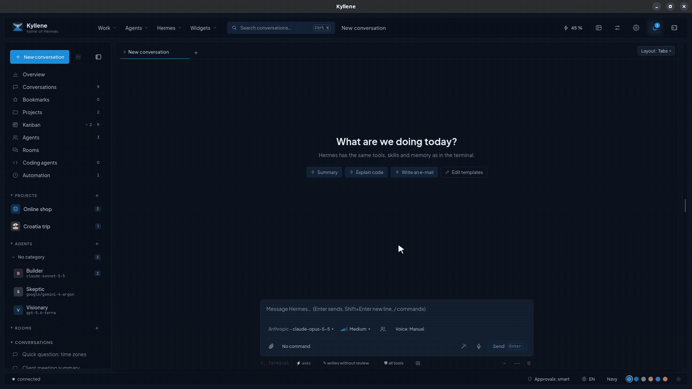
What Kyllene is
Hermes is a great agent: it remembers, learns new skills and works for you around the clock. But most of the time you meet it in a terminal, one conversation at a time. Kyllene turns Hermes into a place where your work lives.
Every project gets a home with its conversations, files, tasklists, a Kanban board and git. You can run several conversations side by side, hand a task to an agent and come back when it is done, see what each day cost, and manage all of Hermes without touching a config file.
Kyllene talks to your existing Hermes install, so sessions, memory, skills and profiles are shared: start something in Kyllene and continue it in the terminal, or the other way round.
When something is missing, you add it: widgets put anything on screen, and Hermes can write them for you.
Kyllene is the mountain in Arcadia where Hermes was born. Hence the tagline: home of Hermes.
What it can do
The short version. The full list is in the README.
Conversations
Rendered Markdown with tables, diagrams and code, a live panel of every tool call, clickable questions and approvals.
Many at once
Tabs, a grid or free windows; pop any conversation out into its own window. Ctrl+K searches everything.
Projects
Conversations, files with previews, an outputs gallery and a git panel where every write waits for your OK.
Tasklists and Kanban
Markdown tasklists the agent ticks off, and a board where agents run cards in the background and ask when stuck.
Coding agents
Claude Code and Codex inside the app, with the same approval cards and their history.
Every model
One searchable picker with price, context and benchmark class; compare two models on one prompt.
Costs and limits
Tokens and costs by model, agent and project, subscription limits with a pace line, a timeline of the day.
Manage Hermes
Skills, MCP servers, plugins, cron, profiles, keys, memory, logs and gateways in one screen.
Voice
Dictation with a local Whisper model, answers read aloud, transcription of recordings.
Several computers
Projects, tasklists, settings and widgets sync through GitHub or your cloud drive.
Private
No telemetry, no account, no server. The only call home is the update check, a static file on GitHub.
The 3-minute tour
A real Kyllene window, recorded with made-up data.
Screenshots
Click a picture for full size. All data in them is made up.

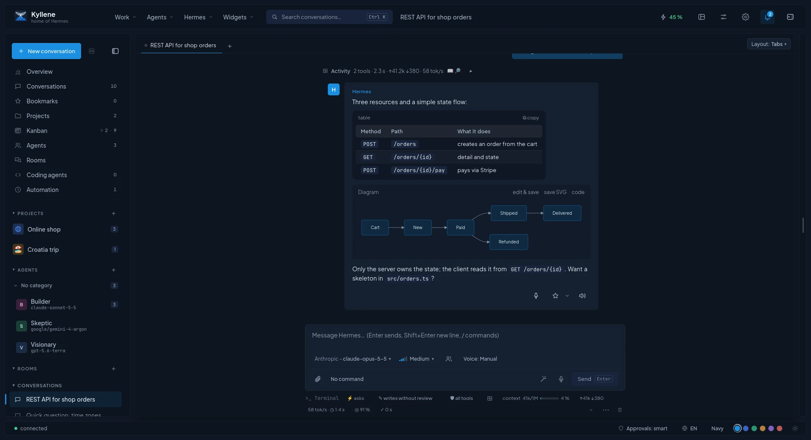

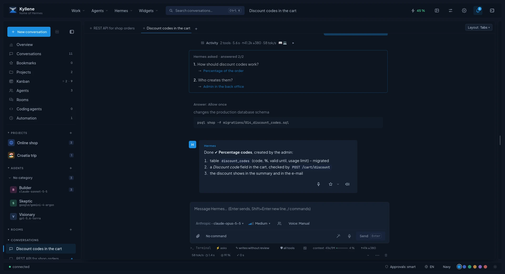

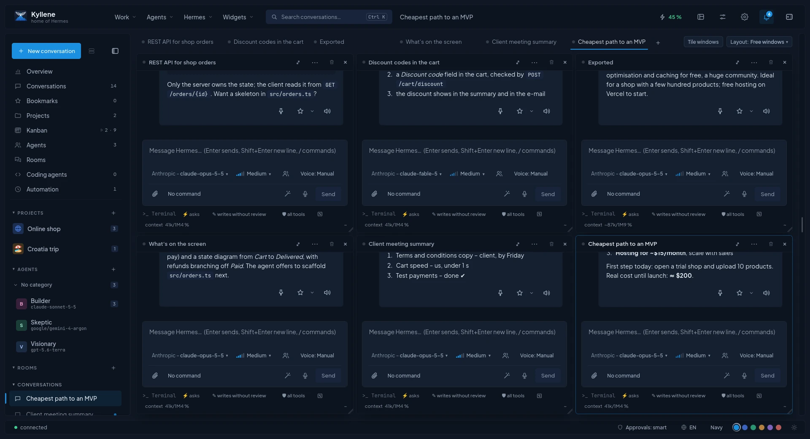

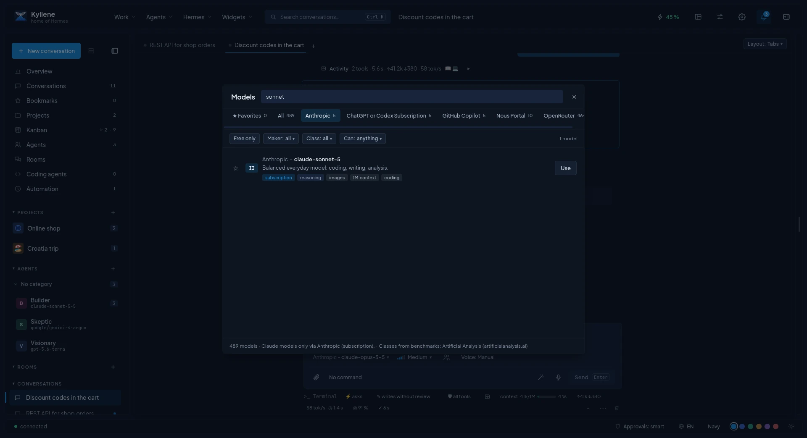

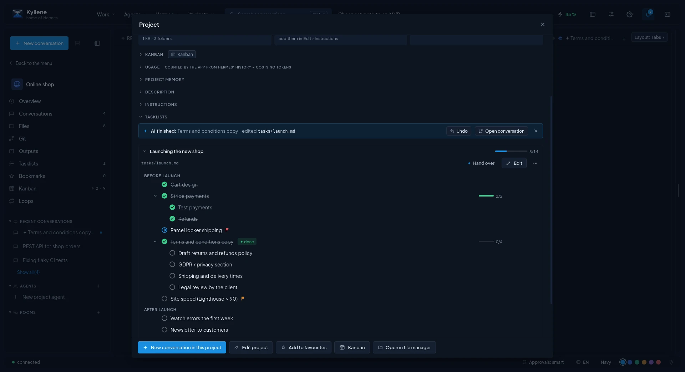


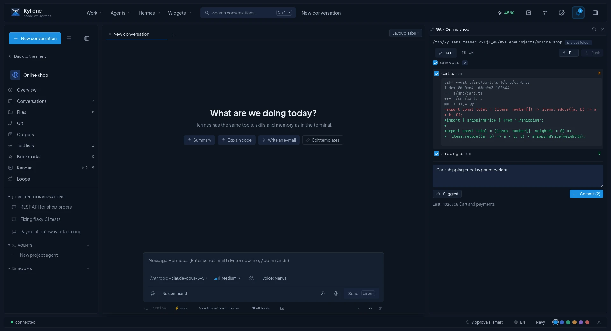

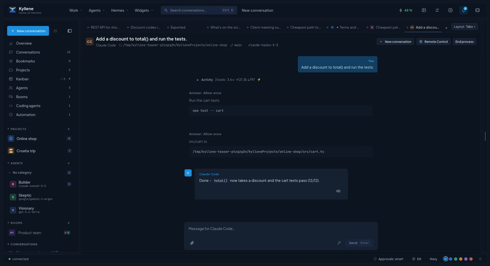

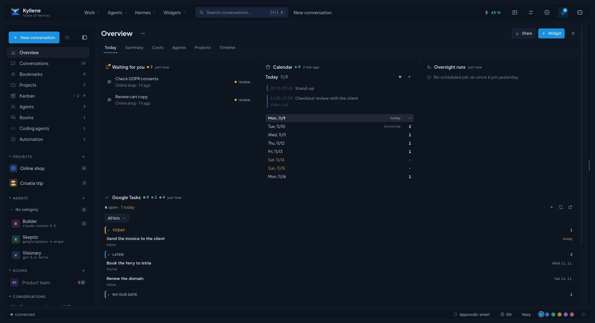

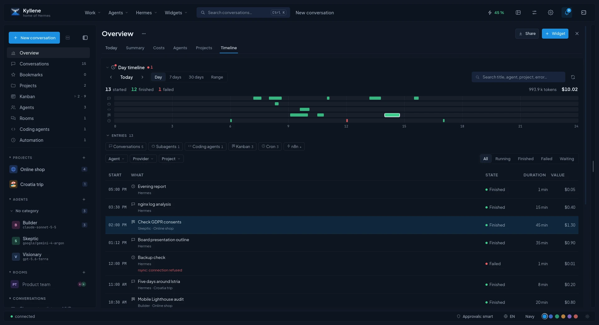

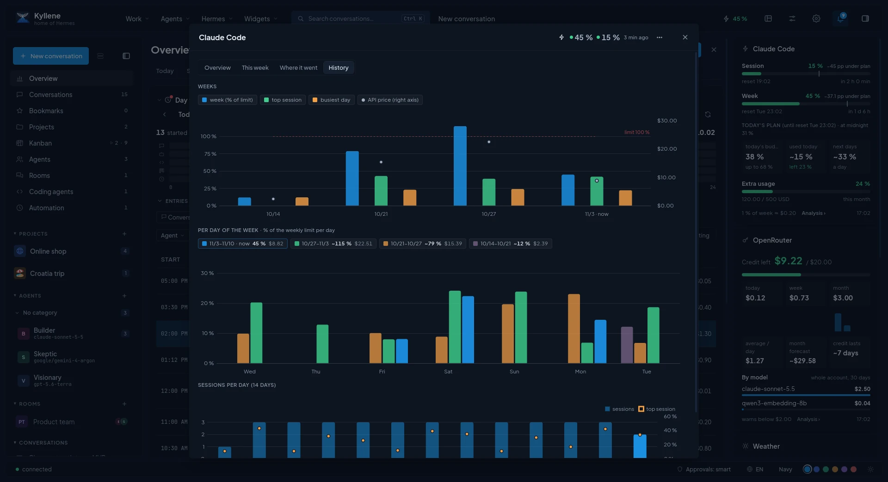

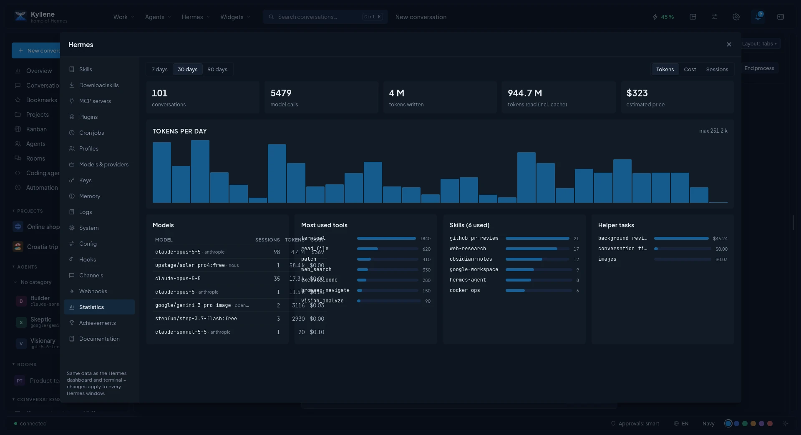
What you need
- Linux x86_64. Tested on Manjaro, Ubuntu 22.04 and 24.04 and Fedora (GNOME, Wayland). The same AppImage runs on other modern distros too. Windows and macOS are planned.
- FUSE to run AppImages (
fusermount3orfusermount). Desktop installs ship it; the installer checks it and tells you the install command for your distro when it is missing. - About 100 MB for Kyllene, about 2.7 GB more if Hermes is not installed yet.
- An account or API key for a model (for example Claude, ChatGPT, OpenRouter). Kyllene has no account of its own and uses whatever your Hermes has.
sudo, into ~/.hermes, a few minutes; it needs git and curl; if your distro lacks them, install them first, e.g. sudo apt install git curl).
Already have Hermes? Kyllene uses your existing install.Install
One line in a terminal. No sudo, everything goes into your home folder.
- Run the installer:
It downloads the newest AppImage to
curl -fsSL https://raw.githubusercontent.com/cpoint-eu/kyllene-releases/main/install.sh | bash~/.local/bin/Kyllene.AppImage, adds Kyllene with its icon to your app menu, checks FUSE and ends withDone. - Start Kyllene from the app menu.
- No Hermes yet? Click Install Hermes Agent. The window shows each step and the download; Kyllene connects by itself when it is done, no restart.
- Connect a model. A fresh Hermes has none: in the bar Hermes has no model connected. click Connect a model and sign in to a provider or add an API key. The first provider you connect also becomes the main model.
- Start a conversation. That's it. Dictation asks once to download a speech model (the smaller one is faster).
Without the installer: download the AppImage yourself
Download Kyllene_<version>_amd64.AppImage with the button below (or from the
latest release), make it executable and run it:
chmod +x ~/Downloads/Kyllene_*_amd64.AppImage~/Downloads/Kyllene_*_amd64.AppImage
To get the menu entry for a file you already downloaded, pass it to the installer:
curl -fsSL https://raw.githubusercontent.com/cpoint-eu/kyllene-releases/main/install.sh | bash -s -- --appimage ~/Downloads/Kyllene_0.0.1-beta_amd64.AppImageAs a system package: .deb (Ubuntu, Debian, Mint) or .rpm (Fedora)
Releases newer than 0.0.3-beta also come as a .deb and an .rpm. They use your distro's own
WebKit and GStreamer and are smaller than the AppImage. Download the one for your system from the
latest release and install it:
sudo apt install ./Kyllene_*_amd64.debsudo dnf install ./Kyllene-*.x86_64.rpm
The .rpm is signed. So that Kyllene can update it, import the Kyllene key once:
sudo rpm --import https://raw.githubusercontent.com/cpoint-eu/kyllene-releases/main/kyllene-rpm-key.ascKyllene updates the package by itself too; the update asks for your password (administrator rights).
Uninstall with sudo apt remove kyllene or sudo dnf remove kyllene (your data stays).
Use either the package or the AppImage, not both.
A specific version
curl -fsSL https://raw.githubusercontent.com/cpoint-eu/kyllene-releases/main/install.sh | bash -s -- --version v0.0.1-betaAll versions with their release notes: releases.
🤖 Let your AI install it
Already using Hermes, Claude Code, Codex or another coding agent? Paste this to it:
Install Kyllene for me by following the "Install guide for AI agents" inhttps://github.com/cpoint-eu/kyllene-releases/blob/main/README.md
Updates
Kyllene updates itself. You do not need to run the installer again.
- It checks for a new version at start and once a day. When one is out, a window shows What's new with Update and restart, Later (asks again tomorrow) and Skip this version.
- Check by hand: Settings › About › Check for updates, or Ctrl+K and Check for updates.
- Running conversations keep going in Hermes; Kyllene reconnects to them after the restart.
- Every release is signed and tied to the Hermes versions it was tested with. When your Hermes is too old for a new Kyllene, the window offers Update Hermes first (that restarts the Hermes gateway and interrupts running conversations, so let them finish).
- After you update Hermes yourself, Kyllene checks on its own that everything it uses still works, and tells you if something broke.
The update check is the only thing Kyllene fetches from the internet by itself: a static file in the releases repository. No data about you is sent.
Uninstall
curl -fsSL https://raw.githubusercontent.com/cpoint-eu/kyllene-releases/main/install.sh | bash -s -- --uninstallThis removes the app, its menu entry and icon. Your data stays, so a later install continues where you left off.
Remove everything, including your data
Kyllene's settings, layout and app data:
rm -rf ~/.local/share/kyllene ~/.local/share/eu.cpoint.kyllene ~/.config/eu.cpoint.kyllene ~/.cache/kyllene ~/.cache/eu.cpoint.kylleneHermes Agent with all its conversations, memory, skills and keys lives in ~/.hermes. Delete it only if
you do not use Hermes anywhere else (the terminal, Discord…):
rm -rf ~/.hermes ~/.local/bin/hermesYour project folders are never touched. If you turned on sync, the synced copy stays in your GitHub repository or cloud drive.
Troubleshooting
| Problem | What to do |
|---|---|
| The installer stops with FUSE is missing., or the AppImage says No suitable fusermount binary found on the $PATH | Install FUSE and run the installer again: sudo apt install fuse3 (Debian, Ubuntu),
sudo dnf install fuse3 (Fedora) or sudo pacman -S fuse3 (Manjaro, Arch). |
| The installer warns libGLESv2.so.2 (OpenGL ES) was not found, or Kyllene closes right at start with Couldn't open libGLESv2.so.2 | Install OpenGL ES: sudo apt install libgles2 (Debian, Ubuntu), sudo dnf install libglvnd-gles
(Fedora) or sudo pacman -S libglvnd (Manjaro, Arch). Desktop installs already have it. |
| /dev/fuse is missing (in a container or a VM without FUSE) | Start Kyllene as ~/.local/bin/Kyllene.AppImage --appimage-extract-and-run. |
| The window stays empty, white or black (often with an NVIDIA graphics card) | Start it once from a terminal with WebKit's GPU workaround:
WEBKIT_DISABLE_COMPOSITING_MODE=1 instead. Either way, please
report your graphics card, driver and desktop
(GNOME/KDE, Wayland/X11), so it can be fixed for everyone. |
| Kyllene is not in the app menu | Run the installer again; it adds the entry ~/.local/share/applications/kyllene.desktop. Some desktops show it only after you log out and in. |
| The installer says … belongs to another Kyllene install (built from source?) | You already have Kyllene built from source. Run the installer with bash -s -- --force only if you want to replace it. |
| Hermes could not be started | Check that Hermes works in a terminal (hermes, or ~/.local/bin/hermes), then restart Kyllene. The details on that screen say what failed. |
| The Hermes install from the button fails | The window names the failed step and shows the installer's output. Usually it is the network or disk space (it needs about 2.7 GB): fix that and click install again. |
| Conversations start but no answer comes | Hermes has no model yet: click Connect a model in the bar Hermes has no model connected., or run hermes setup in a terminal. |
| Dictation does nothing the first time | It needs a speech model once: Kyllene offers to download it. Change it later in Settings › Speech to text. |
| Something broke after a Hermes update | Kyllene tells you what does not work. Until a new Kyllene is out, you can go back to the Hermes version named in the release notes (“Tested with Hermes Agent …”). |
| The window shows only the top bar on a dark background | Part of the app crashed. Please report it and attach ~/.local/share/kyllene/crash-log.json. |
Still stuck? Open an issue with your distro, desktop, Kyllene version (Settings › About) and what you see.
More
Build your own widget
Put anything on screen, with a ready-to-run example. Or let Hermes write it.
Documentation
Every setting, managing Hermes, projects, Kanban, coding agents, sync, voice and shortcuts.
Everything in Kyllene
Every feature by area: what it is for and where you find it (menu, shortcut, palette command).
Release notes
What changed in each version, and which Hermes it was tested with.
Bugs and ideas
Report a problem or suggest an improvement (needs a GitHub account).
FAQ
Is it free? Yes.
How is it different from Hermes Desktop? Hermes Desktop is the official app by Nous Research and a fine general client. Kyllene is an independent app built around projects and daily work: tasklists, Kanban, git, coding agents, several conversations at once, costs and widgets. Both talk to the same Hermes, so you can use either, or both.
Where is the source code? It is not public yet. The releases repository holds the builds and the issue tracker.
Support. Kyllene is built in spare time. If it saves you time, you can buy me a coffee on Ko-fi ☕